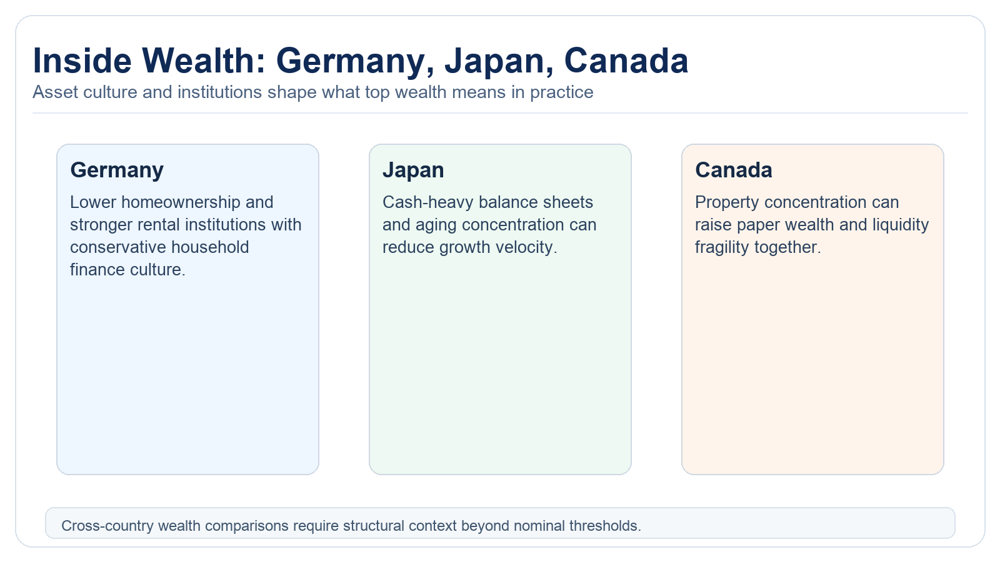
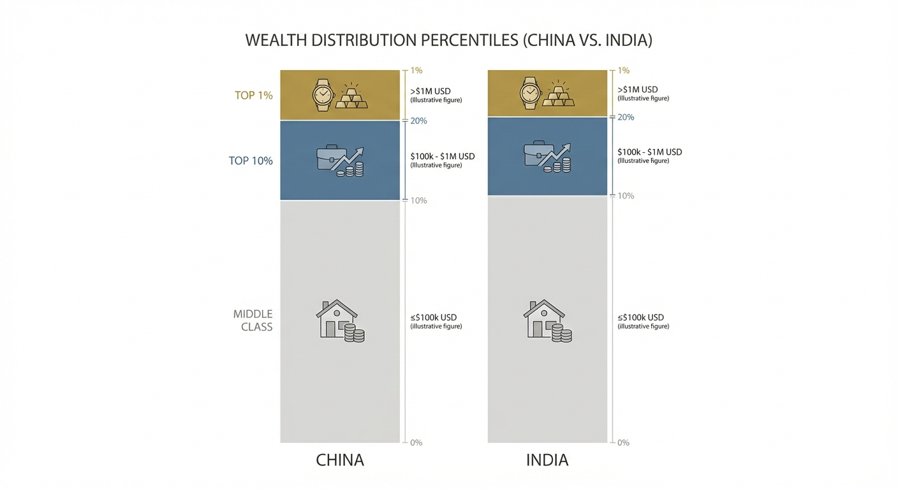
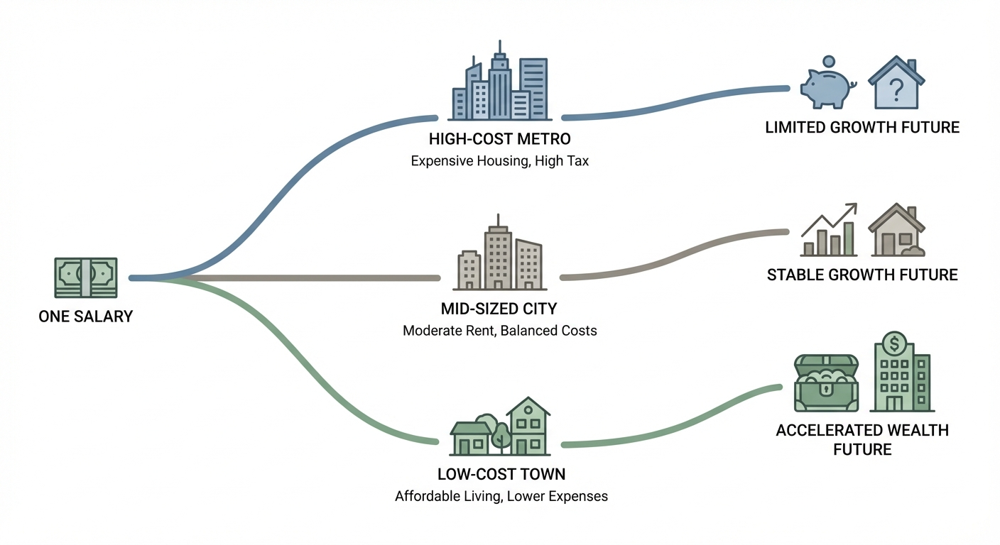
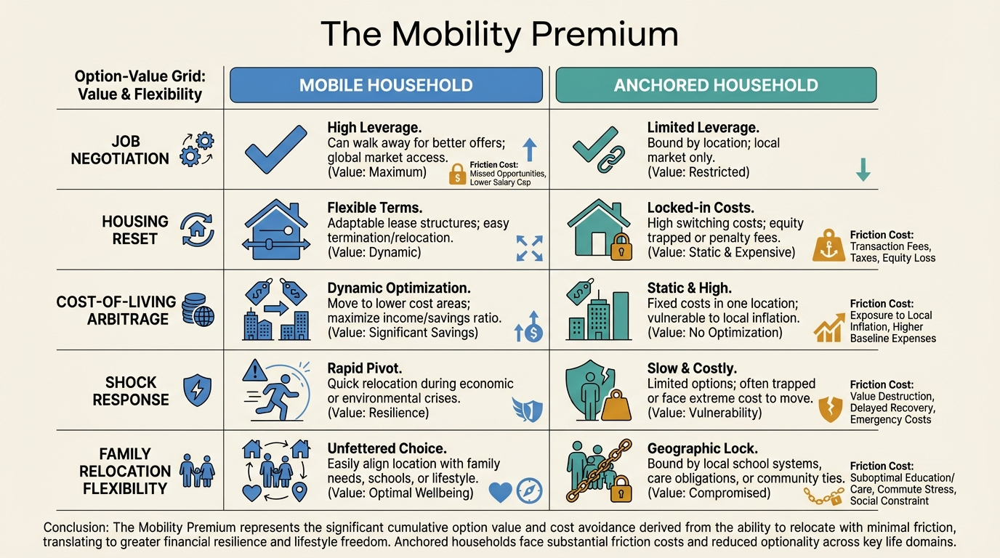
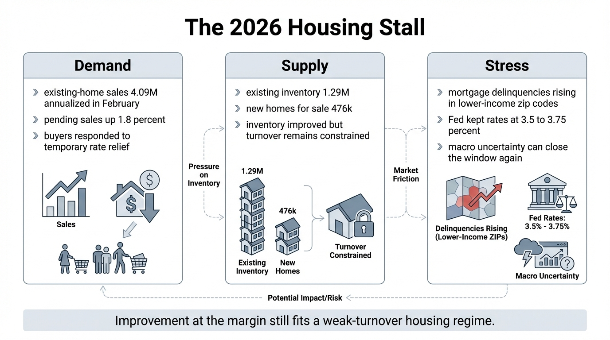
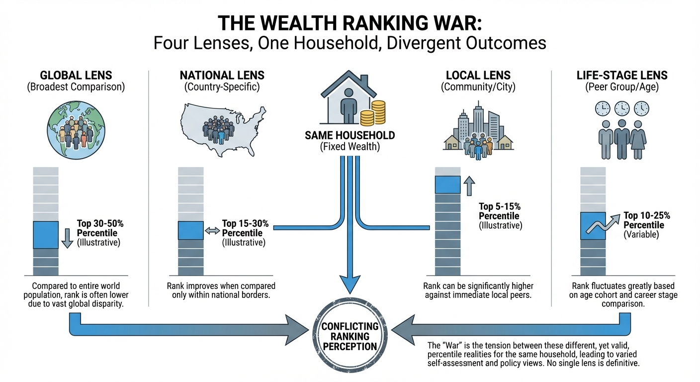

Inside Wealth: Germany, Japan, and Canada
structural comparison of top wealth outcomes in Germany, Japan, and Canada.
Place changes what wealth means. The same income or net worth can translate into radically different resilience once local housing, tax structure, and mobility constraints are priced in.
That is the logic behind this cluster. Nominal wealth has to be interpreted inside a local asset system, a local cost stack, and a local labor market rather than in abstraction from place.
These articles compare developed and emerging-market wealth frames, city-level path divergence, and the difference between national rank and local decision reality. They show why geographic context often matters more than broad percentiles suggest.
For readers interested in international comparison, this hub should be treated as a translation layer. It helps convert calculator outputs into place-specific meaning.

structural comparison of top wealth outcomes in Germany, Japan, and Canada.

A practical breakdown of top-10 and top-1 wealth dynamics in China and India, and what they reveal about modern middle-class resilience.

Why equal salaries produce different long-term wealth outcomes once city-level housing, taxes, and recurring costs are modeled.

Why the ability to move across jobs, cities, and housing structures behaves like a real wealth premium even when it does not appear on a balance sheet.

Why 2026 housing data looks better at the margin yet still supports a weak-turnover, uneven-stress housing regime.

Why your wealth percentile shifts across global, national, local, and life-stage baselines, and how to use each lens correctly.